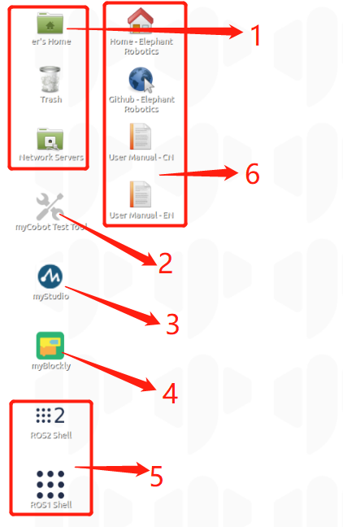
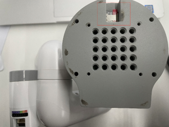

开发环境介绍
1.Ubuntu Mate 20.04系统简介
什么是Ubuntu
Ubuntu是个人桌面操作系统中使用最广泛的linux操作系统。对于初学者来说，熟悉linux环境或一些嵌入式硬件操作系统是一个很好的选择。

1.1 系统基本功能介绍
1.1.1 系统与正式发布版本的区别
与官方版本相比，我们做了以下改变：
- 集成python/Ros1/Ros2和其他环境，用户可以直接使用我们公司提供的内置软件，而无需设置其他环境
- 已经安装了我们的操作软件（myStudio、myBlockly），无需自己安装
- 配置VNC屏幕共享，它将在启动后拥有自己的热点，您可以通过远程连接工具连接到屏幕：VNC，而无需连接到显示屏
1.1.2 系统基本功能介绍
因为myCobot 280 Jetson nano版本具有内置的开发环境，所以下面介绍的软件可以直接使用。

1 系统文件夹和回收站
2 测试myCobot是否正常工作的测试工具
3 myStudio: 它可以将固件烧录到机械臂上
4 myBlockly: 可视化模块化编程软件
5 Ros1/Ros2：它是一种用于编写机器人软件程序的高度灵活的软件架构。
6 browser and link：可以跳转到我们的官方网站和Gitbook (需要连接到Internet)
2 工具栏
1 终端：命令行界面
2 文件管理器 ：可以查看系统的存储资源
3 Notepad：也用于打开一些脚本文件，查看代码
4 Vim：文本编辑器 有关详细信息，请查看 introduction
5 显示桌面：单击可直接显示桌面
6 用于查看CPU使用情况和内存使用情况
7 回收站： 它用于存储用户临时删除的文档，并且可以恢复回收站中存储的文件
1.3 如何重置系统
当系统因操作不当而损坏或设置错误且无法更改时，我们可以重新刻录系统映像并恢复初始设置（您需要SD卡读取器）详情查阅后面部分章节：TF卡更换教程以及烧录镜像

2. 系统中包含的开发环境介绍
Ros1/Ros2
ROS 是开源的，是用于机器人控制的一种后操作系统，或者说次级操作系统。通过ROS，我们能够在虚拟环境中实现对机械臂的仿真控制。我们将通过 rviz 平台实现对机械臂的可视化，并使用多种方式对我们的机械臂进行操作；通过moveit 平台进行机械臂行动路径的规划和执行，达到自由控制机械臂的效果。安装ROS开发环境后，具体可查看 ROS相关章节。

Python

基于Python 开发使用. 我们的机器人支持Python，Python API库的开发也越来越完善。 可以通过Python控制机器人的关节角度、坐标、夹持器等方面。 参考安装python环境章节获取更多信息。
Blockly 开发使用
myBlockly是一款全可视化的模块化编程软件，属于图形化编程语言。可以让用户以搭积木式的方法进行编程控制mycobot。特别适合初学者学习编程，锻炼编程思维。